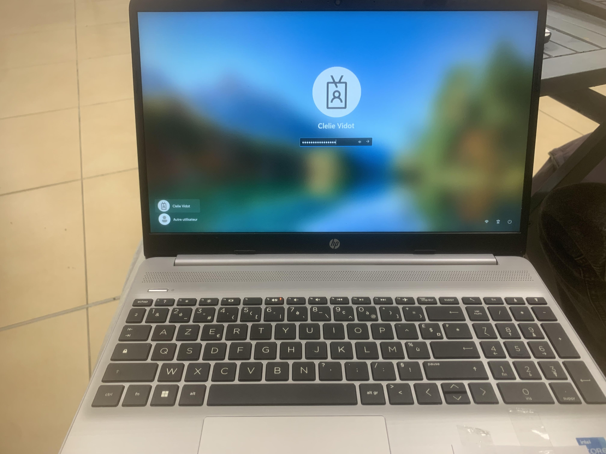
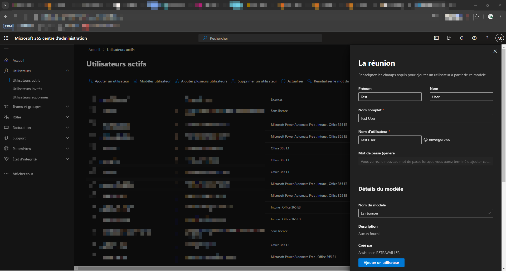
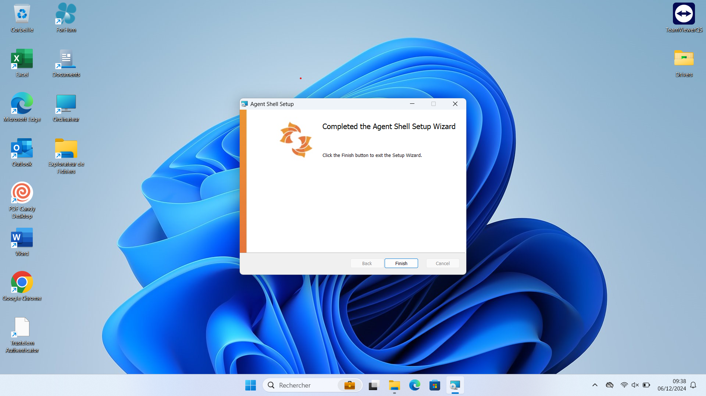
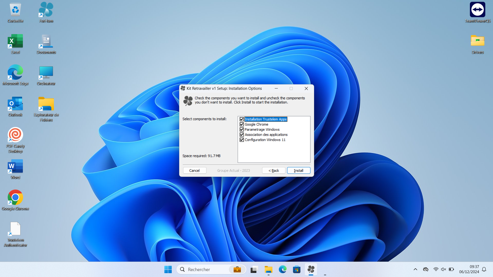
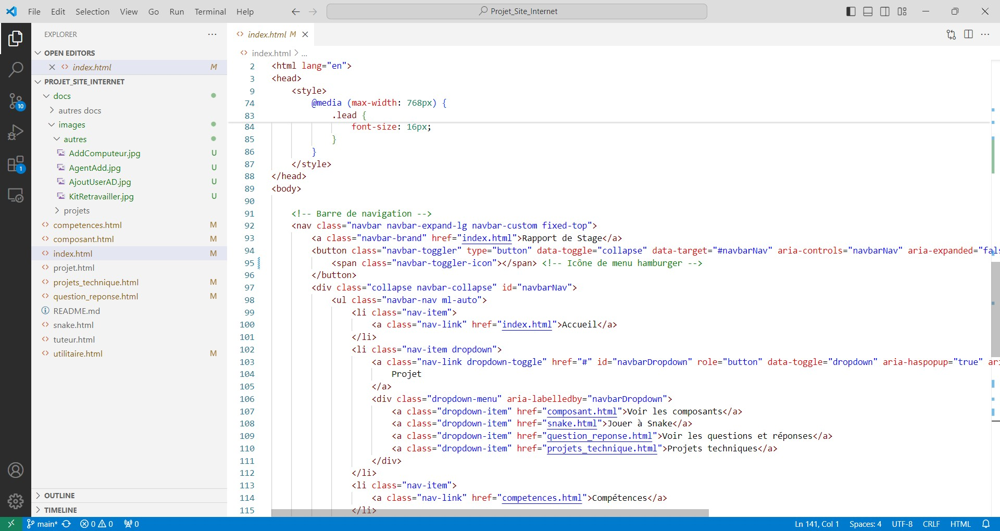

Mise en place du matériel informatique et technique
Déploiement des Postes de Travail et Équipements Réseau
Dans le cadre de mon stage, j'ai participé à la mise en place et au déploiement de postes de travail, de périphériques, ainsi que d’équipements réseau. Cela a inclus l'installation et la configuration des ordinateurs pour les nouveaux arrivants et autres utilisateurs finaux.
Utilisation de l'Active Directory pour le Déploiement
Pour faciliter le déploiement et la gestion des postes, j'ai utilisé l'Active Directory. Cet outil m'a permis de gérer les utilisateurs, les groupes, les autorisations et les ressources au sein du réseau de l'entreprise, garantissant une administration sécurisée et centralisée des postes déployés.
Configuration Logicielle et Support
J'ai également assuré la configuration optimale des postes en installant les logiciels nécessaires, en effectuant des mises à jour, et en configurant des paramètres spécifiques pour chaque utilisateur. Mon rôle comprenait la résolution des problèmes techniques rencontrés par les utilisateurs afin de garantir une utilisation fluide des systèmes.
 Développement
Création de Sites Web et Interfaces Utilisateur
Une partie essentielle de mon stage a été le développement web, incluant la création et la mise en ligne de sites internet en utilisant HTML et CSS. Ces sites sont conçus pour offrir une interface simple, ergonomique et facile à utiliser, avec une attention particulière portée à l'expérience utilisateur.
Utilisation d’Outils de Développement
Pour le développement, j'ai utilisé le logiciel Visual Studio Code, qui est un éditeur de code puissant et adapté à la création de projets web. De plus, j'ai utilisé GitHub pour héberger et gérer les versions des sites web développés, ce qui m'a permis de collaborer efficacement sur les projets et de conserver un historique des modifications apportées.
Lecture et Débogage de Code
Un autre aspect important de mon travail a été la lecture et le débogage de lignes de code. Cela impliquait de comprendre le code existant, d’identifier des erreurs potentielles, et de proposer des solutions pour améliorer les fonctionnalités ou corriger des bugs. Cette compétence est cruciale pour assurer la qualité et la stabilité des projets développés.